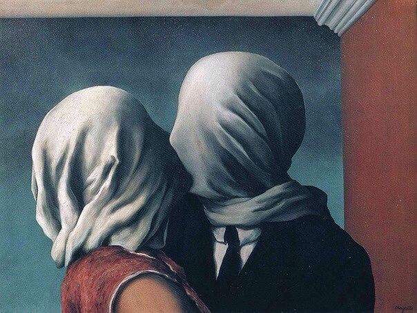

Рене Магритт
21 ноября 1898 – 15 августа 1967

The lovers

The Son of Man

The Treason of Pictures

Рене Магритт родился в ноябре 1898 года в Лессине, Бельгия, в семье торговца тканями Леопольда Магритта и модистки Реджины Бертиншам. Уже в 11 лет он начал брать уроки рисования, а в 12 потерял мать, которая покончила жизнь самоубийством, бросившись в реку Самбр; лицо женщины часто появляется в его работах. В 1916 году он поступил в Королевскую Академию изящных искусств в Брюсселе, где изучал живопись, экспериментируя с импрессионизмом, кубизмом и футуризмом. Его учителями были Констан Монтальд и Гисберто Комбаза, который больше нравился молодому художнику. В 1920 году он был призван на военную службу и провел около девяти месяцев в пехотном полку в Беверло. После армии он работал на обойной фабрике, создавал рекламные плакаты и вывески, но в 1926 году заключил контракт с галереей и полностью посвятил себя живописи. В этом же году его первая сюрреалистическая картина — «Потерянный жокей» — привлекла внимание публики, однако первая выставка в Брюсселе прошла с критикой, и он решил переехать в Париж.
В 1927 году Магритт устроил свою первую персональную выставку в Брюсселе, которая прошла под критикой, и разочарованный художник переехал в Париж, где присоединился к группе сюрреалистов во главе с Андре Бретоном. В 1929 году его работы были представлены на выставке в галерее Goemans вместе с Пикассо, Дали и другими великими художниками, однако он так и не смог обрести значительного влияния в Париже и вскоре вернулся в Брюссель. Там он продолжил работать в сфере рекламы вместе с братом, создав собственное агентство. В середине 1930-х годов он под псевдонимом «Эймар» рисовал постеры к фильмам, а его живопись продолжала развиваться, привлекая внимание за границей. В 1936 году его работы были выставлены в США, а в 1938 году — в Лондоне. В это время стиль Магритта начал претерпевать изменения: во время оккупации Бельгии во Второй мировой войне он стал добавлять яркие, красочные элементы в свои картины, что было протестом против жестокости и оккупации.
После окончания Второй мировой войны Магритт столкнулся с трудностями: заказов на рекламу было мало, и он даже занимался подделкой картин других художников и фальшивомонетничеством, что помогало ему выживать. В 1946 году он публично отказался от пессимистических мотивов своего раннего творчества и подписал манифест сюрреализма с другими художниками. В 1950-х годах его интерес к искусству и символизму снова вырос, а его работы начали покупать за границей, особенно в США и Великобритании. Магритт стал известен как мастер магического реализма, первым включив слова в свои произведения как неотъемлемую часть искусства. Он продолжал носить характерную шляпу-котелок и черное пальто, чтобы сохранить анонимность и подчеркнуть свою загадочную личность. В 1960-х годах он создал знаменитый шахматный набор «Бессмертие» и экспериментировал с новыми материалами, например, стеклом. В 1968 году он завершил работу над своим самым известным проектом — стеклянным шахматным набором, а в 1976 году умер в Брюсселе, оставив после себя богатое наследие сюрреалистического искусства.
Познакомьтесь поближе с самыми известными работами и их смыслом, которые ассоциируются с Рене Магриттом.
"Влюбленные"
"Сын человеческий"
"Вероломство образов"


Год:


Год:
В данных галереях вы можете найти работы Рене Магритта, выставленные на данный момент.
Комментарии